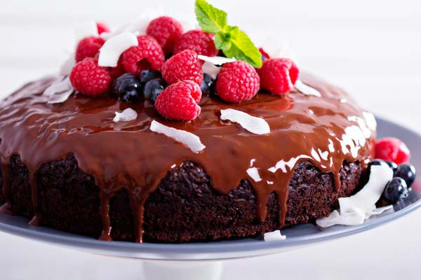

Tarta de chocolate

Ingredientes
- 500g de harina leduante.
- 500ml de agua.
- 200g de azucar organica.
- 50g de cacao en polvo.
- 10 cucharadas de aceite.
- 4 cucharaditas de esencia de vainilla.
- 2cucharaditas de polvo para hornear.
- 1 cucharadita de bicarbonato de sodio.
- Mouse de chocolate.
- Frutos rojos.
Preparacion
- Mezclar bien en un recipiente la harina, el aceite, el polvo de hornear y
el bicarbonato de sodio.
- En otro recipiente mezclar bien el azucar, el agua y la esencia de vainilla.
- Combinamos ambos recipientes de manera tal que no queden grumos.
- Se parar la mezcla en dos recipientesy en unos agregar el cacao y revolver.
- En el molde de la tarta verte la preparacion del cacao y despues la preparacion
de vainilla .
- Cocinar a fuego bajo entre 45 minutos y 1 hora.
- Decora con un poco de Mouse de chocolate o dulce de leche de soya
derretido y frutos rojos encima .